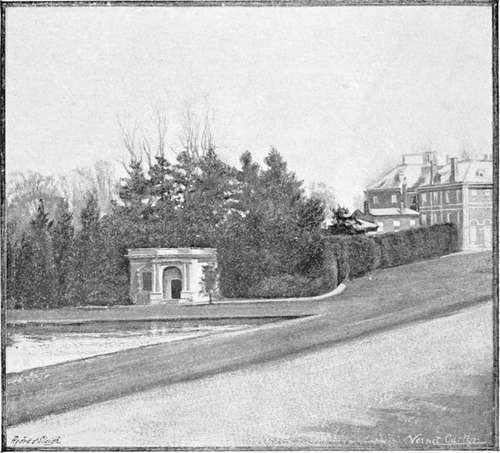
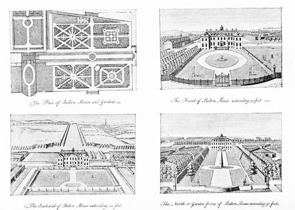

Dawn Of Landscape Gardening. Part 2
Description
This section is from the book "A History Of Gardening In England", by Alicia Amherst. Also available from Amazon: A History Of Gardening In England.
Dawn Of Landscape Gardening. Part 2
There is a contemporary description of such a garden in a letter written by Lord Percival to his brother-in-law, Daniel Dering.* It is dated from Oxford, August 9th, 1724:— and wood, but the last is so managed as justly to be counted part of the former. From the parterre you have terraces and gravelled walks that lead up to and quite thro' the wood, in which several lesser ones cross the principal one, of different breadths, but all well gravelled and for the most part green sodded on the sides. The wood consists of tall beech trees and of our way to see Hall Barn, Mr. Waller's house—a London Box, if I may so call a house of 7 windows every way. He was gone a hunting, so we did not go into the house, which promised nothing extraordinary, but we spent a full hour and half in viewing the gardens, which you will think are fine, when I tell you they put us in mind of those at Versailles. He has 80 acres in garden thick underwood, at least 30 foot high. The narrow winding walks and paths cut in it are innumerable; a woman in full health cannot walk them all, for which reason my wife was carry'd in a Windsor chair like those at Versailles, by which means she lost nothing worth seeing. The walks are terminated by Ha-hah's, over which you see a fine country and variety of prospects every time you come to the extremity of the close winding walks that shut out the sun. Versailles has indeed the advantage in fountains, for there is not one in all this garden ; but there are two very noble pieces of water full of fish, and handsomely planted and teraced on the sides. In one part of the wood, and in a deep bottom, is a place to which one descends with horrour, for it seems the residence of some draggon ; but there shines a gleam of light thro' the high wood that surrounds and shades it, which recovers the spirits, and makes you sensible a draggon would seek some place still more retired. This place may be call'd the Temple of Pan or Silvanus, consisting of several apartments, arches, corridores, etc, composed of high thriving ews cut very artfully. In the centre of the inner circle or court, if I may call it so, stands the figure of a guilt satyr on a stone pedestal. ... I pass over the bowling-green, and large plantations about the house, which are but young, but I must not forget a bench or seat of the famous Edmond Waller's the Poet, which is so reverenced that, old as it is, it is never to be removed, but constantly repaired, like Sir Francis Drake's ship. The present Waller is his grandson. All this fine Improvement is made by himself or Aisleby, his father-in-law, who had this house and the lands about it, in right of his wife's joynture, but gave it up in the South Sea year to his Son-in-law. There is a great deal more still to be done, which will cost a prodigious sum, but this gentleman by marriage South Sea and his Paternal Estate [is able] to do what he pleases." After such a charming description it is pleasing to find that Hall Barn has been but little altered ; and a seat bearing the poet's name remains to this day.
" Friday morning left Becconsfield ; we went half a mile out.
* MS. belonging to Lord Egmont.
Hall barn.
Lord Percival was a capital correspondent, and some other letters to Daniel Dering give his impressions of the gardens he saw on his tour about England in 1723, thus:—"To Wickham, 7 miles to Lord Shelburn's [we thought] he would by this time have made some tolerable garden or cut fine walks in the woods that cover the hills about him, but we were entirely disappointed; the wood is neglected ; the gardens which are but 4 acres, without tast and neglected too, and the house fourty times worse than Lady Bidulf's on blackheath." " Col. Tyrrel's called Shotover (near Oxford) about two miles [further on] . . . There is plenty of wood and water about the house, and both brought into the circuit of the garden, with regularity and bewty. A large octogon bason on the west, and two canals on the east ; the walks, parterres, terraces, and avenues are agreably separated by groves of reverend oak, beech and elm trees; in a word, his garden is already compleated and yet he still goes on to gratify his good tast." Lord Percival was evidently a friend of Sir William Temple's nephew, as he refers to him frequently in other letters. It is interesting to follow the history of the garden at Moor Park. The following letter is dated August 25th, 1724 :—" Called on Jack Temple who lives a mile from Farnham. ... It was purchased by the famous Sir William Temple, who took great delight in it, and made part of the garden, but this gentleman, his nephew, has greatly added to it, and rendered it indeed a very pleasant seat. He has the advantage of a branch of the River Wye, which is brought into the midst of his garden, and supply's two pretty cascades. In the Parterre are 4 Antique Statues a young Papyrius and his companion a Bacchus, and Diana".
The same year Lord Percival went into Norfolk and Suffolk. He visited Euston, which he thus describes :—" Neither are the gardens as yet considerable, being but young, and his trees not well grown. He has a very fine canal, that confines one side, and at the end of his gravel walk is a large bason with a lake beyond it." And Lord Oxford's place, " Chipman, 3 miles north of Newmarket. The gardens are 50 acres, and have a good deal of variety, a fine bowling-green, very high hedgerows cut into vistos, long tracts and walks, from which you see several miles into the country through well-grown avenues. There is a canal in the shape of a T 1000 foot long, and 70 broad." This again might be a description of the garden still existing at Bramham, or of one of Switzer's plans. Belton is another charming example of a garden of about this date which although somewhat altered still retains several features observable on these plans.
Belton in lincolnshire. from an engraving by badeslad.
Continue to:
- prev: Chapter XI. Dawn Of Landscape Gardening
- Table of Contents
- next: Dawn Of Landscape Gardening. Part 3